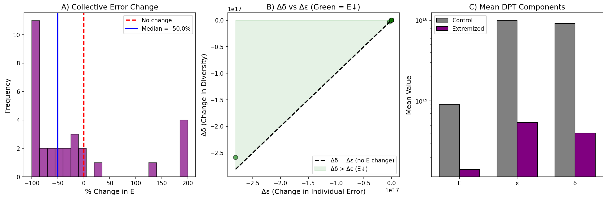
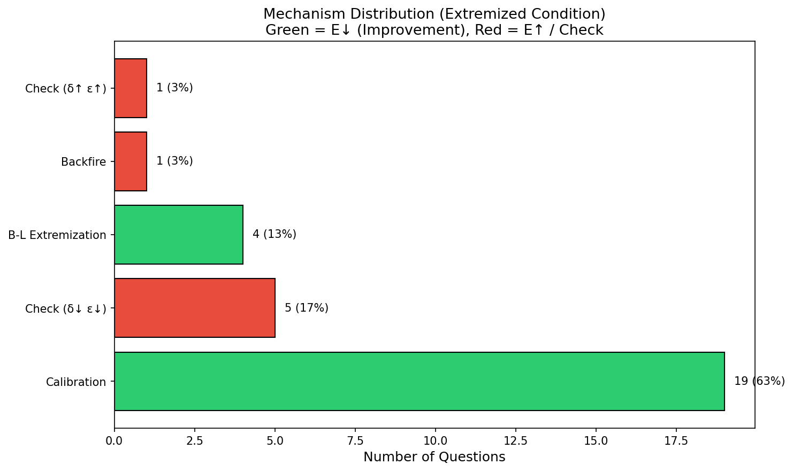

📈 Diversity Prediction Theorem Analysis
The DPT Identity
E = ε - δ
- E = Collective error = (μ - θ)²
- ε = Mean individual error = mean((xᵢ - θ)²)
- δ = Predictive diversity = variance
The B-L hypothesis: Anchoring increases both ε and δ, but Δδ > Δε → E decreases
Results

